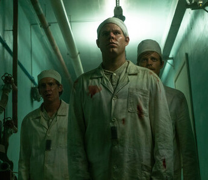

G
r
e
a
t
e
s
t
O
f
A
l
l
T
i
m
e

5 Seasons 2008-2013
Breaking Bad
Walter White, a chemistry teacher, discovers that
he has cancer and decides to get into the meth-making business to repay his medical debts. His priorities begin to change when he partners with Jesse.
8 Seasons 2011-2019
Game of Thrones
Nine noble families wage war against each other
in order to gain control over the mythical land of Westeros. Meanwhile, a force is rising after millenniums and threatens the existence of living men.

5 Seasons 2013-Ongoing
Peaky Blinders
Tommy Shelby, a dangerous man, leads the Peaky Blinders, a gang based in Birmingham. Soon,
Chester Campbell, an inspector, decides to nab
him and put an end to the criminal activities.

5 Seasons 2005-2017
Prison Break
An engineer installs himself in a prison he helped design, in order to save his falsely accused
brother from a death sentence.
3 Seasons 2017-2020
Dark
A family saga with a supernatural twist, set in a German town, where the disappearance of two
young children exposes the relationships among
four families.
6 Seasons 2004-2010
Lost
The survivors of a plane crash find themselves stranded on a mysterious island. They are forced
to work together for their survival when they
realise that they are not alone on the island.
4 Seasons 2010-2017
Sherlock
Dr Watson, a former army doctor, finds himself sharing a flat with Sherlock Holmes, an eccentric individual with a knack for solving crimes.
Together, they take on the most unusual cases.

4 Seasons 2015-2019
Mr robot
Elliot, a cyber-security engineer suffering from anxiety, works for a corporation and hacks
felons by night. Panic strikes him after Mr Robot,
a cryptic anarchist, recruits him to ruin his
company.
T
o
p
M
i
n
i
-
S
e
r
i
e
s

10 Episodes 2001
Band of Brothers
The story of Easy Company, 506th Regiment
of the 101st Airborne Division from 1942 to the
end of World War II. A collection of fifty portraits illustrated by archive footage and recounted
in voice.

5 Episodes 2019
Chernobyl
In April 1986, the city of Chernobyl in the Soviet Union suffers one of the worst nuclear disasters
in the history of mankind. Consequently, many
heroes put their lives on the line to save Europe.

7 Episodes 2020
The Queen's Gambit
Set during the Cold War era, orphaned chess
prodigy Beth Harmon struggles with addiction in
a quest to become the greatest chess player in
the world.
8 Episodes 2019
Unbelievable
When a teen reports being raped, then recants
her story, two female detectives follow evidence
that could reveal the truth; based on a true story.
S
i
t
c
o
m
s
9 Seasons 2005-2013
The Office
A mockumentary on a group of typical office
workers, where the workday consists of ego
clashes, inappropriate behavior, and tedium.

10 Seasons 1994-2004
Friends
Follows the personal and professional lives of
six twenty to thirty-something-year-old friends
living in Manhattan.

11 Seasons 2009-2020
Modern Family
Three different but related families face trials
and tribulations in their own uniquely comedic
ways.
12 Seasons 2007-2019
The Big Bang Theory
A woman who moves into an apartment across
the hall from two brilliant but socially awkward physicists shows them how little they know
about life outside of the laboratory.
K
-
D
r
a
m
a
s
2 Seasons 2020-Ongoing
The Penthouse: War in Life
A woman attempts to enter high society by
becoming the "queen" in a 100th floor penthouse.
1 Season 2016-2017
Guardian: The Lonely and
Great God
In his quest for a bride to break his immortal
curse, Dokkaebi, a 939-year-old guardian of
souls, meets a grim reaper and a sprightly
student with a tragic past.

1 Season 2012
A Gentleman's Dignity
Four men deal with their professional lives and romance.
1 Season 2018-2019
SKY Castle
A satirical drama that closely looks at the
materialistic desires of the upper-class parents
in South Korea and how they ruthlessly secure
the successes of their families at the cost of destroying others' lives.
T
o
p
I
n
d
i
a
n
W
e
b
-
S
e
r
i
e
s
1 Season 2020-Ongoing
Asur: Welcome to Your Dark Side
A unique crime thriller that pits two opposing
worlds against each other. The less explored, intricate world of forensic science and the deep mysticism of ancient Indian Mythology.

2 Seasons 2018-2019
Sacred Games
A link in their pasts leads an honest cop to a
fugitive gang boss, whose cryptic warning spurs
the officer on a quest to save Mumbai from
cataclysm.

2 Seasons 2018-Ongoing
Mirzapur
A shocking incident at a wedding procession
ignites a series of events entangling the lives of
two families in the lawless city of Mirzapur.
1 Season 2020-Ongoing
Panchayat
A comedy-drama, which captures the journey of
an engineering graduate Abhishek, who for lack
of a better job option joins as secretary of a Panchayat office in a remote village of
Uttar Pradesh.